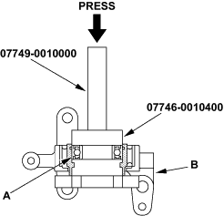
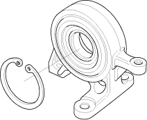
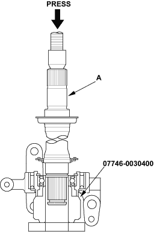
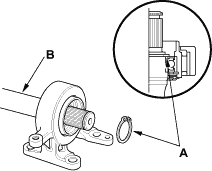

Special Tools Required
- Driver, 07749-0010000
- Attachment, 52 x 55 mm, 07746-0010400
- Attachment, 35 mm I.D., 07746-0030400
- Oil seal driver, 07GAD-PH70201
NOTE: Refer to the Exploded View as needed during this procedure.
- Clean the disassembled parts with solvent and dry them with compressed air. Do not wash the rubber parts with solvent.
- Press the intermediate shaft bearing (A) into the bearing support (B) using the special tools and a press.

- Seat the internal snap ring into the groove of the bearing support.


- Press the intermediate shaft (A) into the shaft bearing using the special tool and a press.

- Seat the external snap ring (A) into the groove of the intermediate shaft (B).
